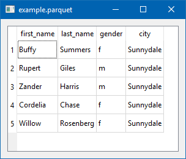

Displaying Parquet Files
Apache Parquet is a columnar storage format available to any project in the Hadoop ecosystem, regardless of the choice of data processing framework, data model or programming language.
I’ll look at 3 interesting ways to peek into parquet files.
1) Jupyter Notebooks as a Simple Viewer
Using a Jupyter Notebook with pyarrow and pandas

2) PyQt5 for a Native GUI
Using Python, pyarrow, and PyQt5 to display a simple, cross-platform, native UI table. pyarrow only supports flat (single level) parquet files.
This code was heavily borrowed from PyQt5 examples.
import sys
import pyarrow.parquet as pq
import pyarrow as pa
import pandas as pd
from PyQt5.QtWidgets import QApplication, QWidget, QTableWidget, QTableWidgetItem, QVBoxLayout
class App(QWidget):
def __init__(self):
super().__init__()
self.title = 'example.parquet'
self.left = 0
self.top = 0
self.width = 800
self.height = 600
self.initUI()
def initUI(self):
self.setWindowTitle(self.title)
self.setGeometry(self.left, self.top, self.width, self.height)
self.createTable()
self.layout = QVBoxLayout()
self.layout.addWidget(self.tableWidget)
self.setLayout(self.layout)
self.show()
def createTable(self):
parquet_file = pq.ParquetFile('example.parquet')
pfmeta = parquet_file.metadata
pfdata = parquet_file.read_row_group(0)
self.tableWidget = QTableWidget()
self.tableWidget.setRowCount(pfmeta.num_rows)
self.tableWidget.setColumnCount(pfmeta.num_columns)
self.tableWidget.setHorizontalHeaderLabels(list(map(lambda x: x.name, pfdata)))
for column_position in range(pfmeta.num_columns):
all_column_data = pfdata[column_position]
for data_position in range(len(all_column_data)):
v = all_column_data[data_position]
self.tableWidget.setItem(data_position, column_position, QTableWidgetItem(str(v.as_py())))
self.tableWidget.resizeColumnsToContents()
self.tableWidget.move(0, 0)
if __name__ == '__main__':
app = QApplication(sys.argv)
ex = App()
sys.exit(app.exec_())Produces:

3) parquet-go for Deeper Analysis
Using the parquet-go library to show the schema (and a bonus go struct) for a parquet file. This library can process nested elements.
$ ./parquet-tools -cmd schema -file example.parquet
----- Go struct -----
Schema struct {
First_name *string
Last_name *string
Gender *string
City *string
}
----- Json schema -----
{
"Tag": "name=schema, repetitiontype=REQUIRED",
"Fields": [
{
"Tag": "name=first_name, type=UTF8, repetitiontype=OPTIONAL",
"Fields": null
},
{
"Tag": "name=last_name, type=UTF8, repetitiontype=OPTIONAL",
"Fields": null
},
{
"Tag": "name=gender, type=UTF8, repetitiontype=OPTIONAL",
"Fields": null
},
{
"Tag": "name=city, type=UTF8, repetitiontype=OPTIONAL",
"Fields": null
}
]
}